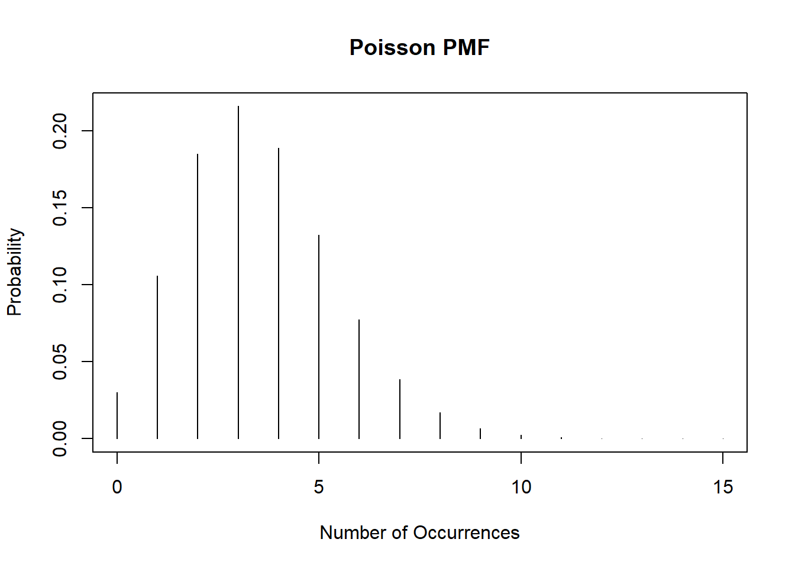
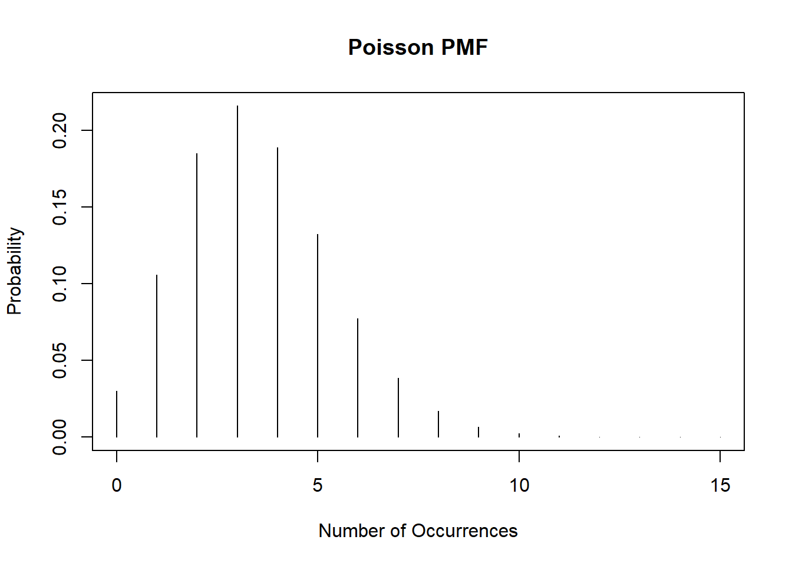
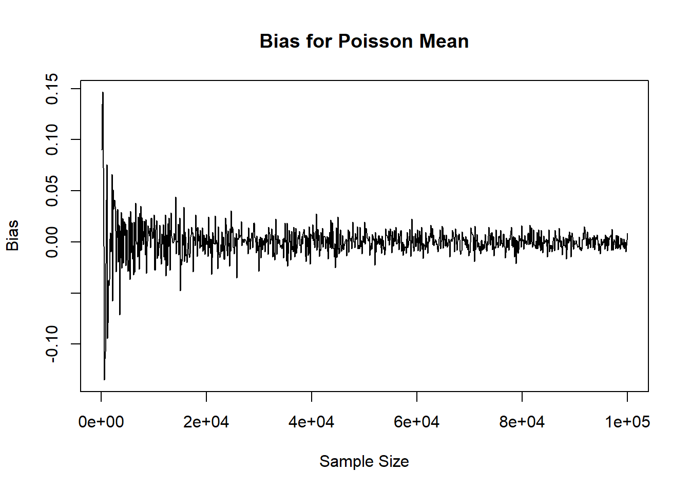
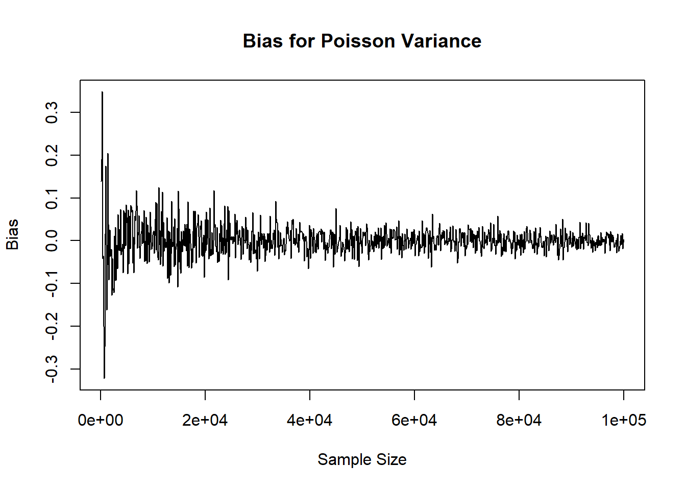
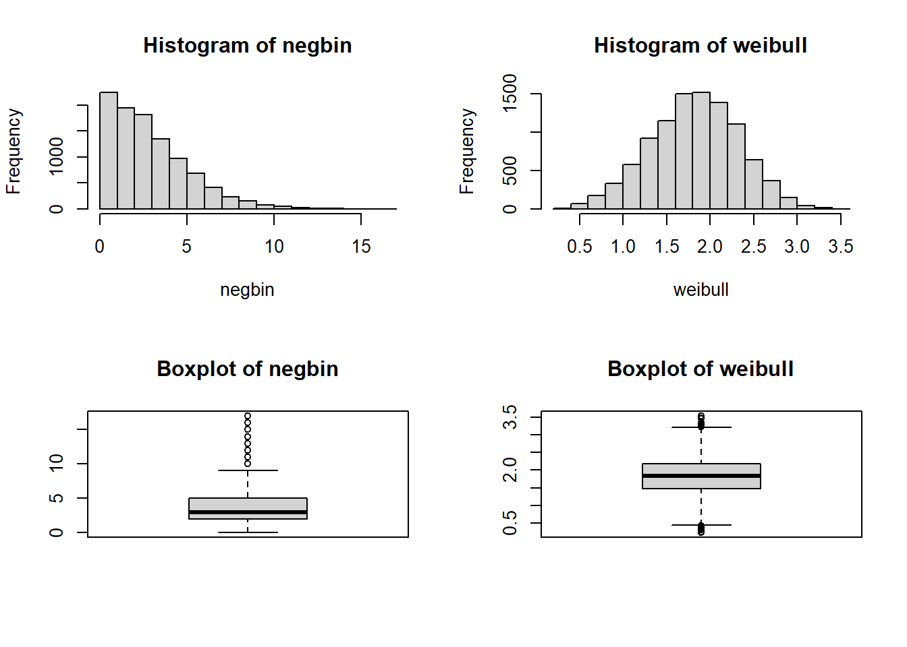
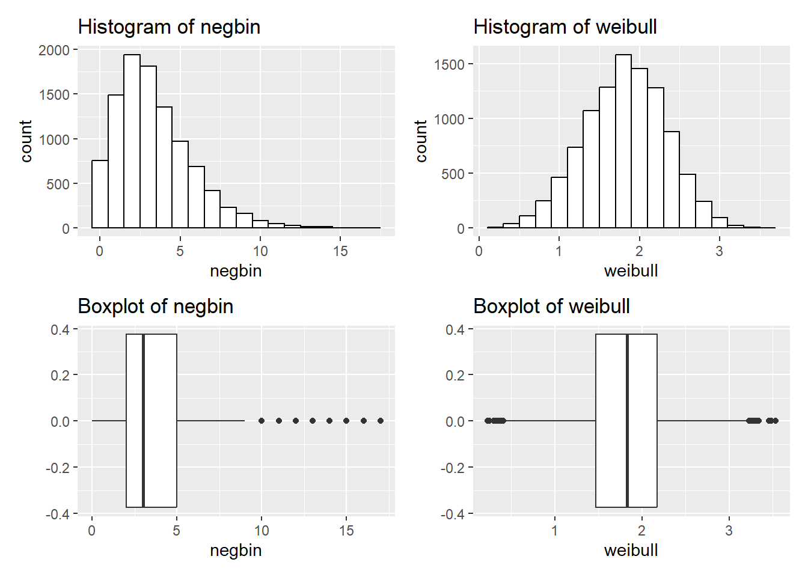
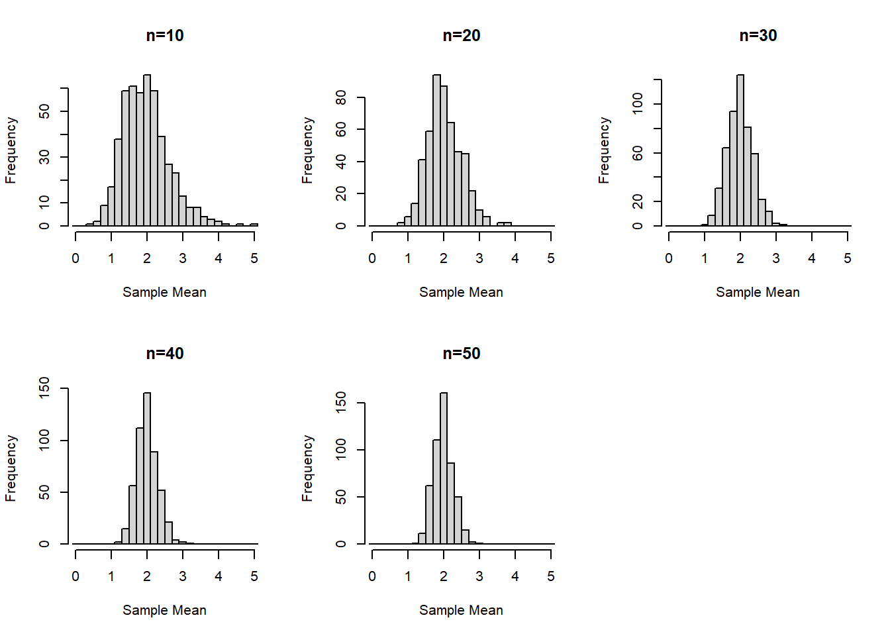
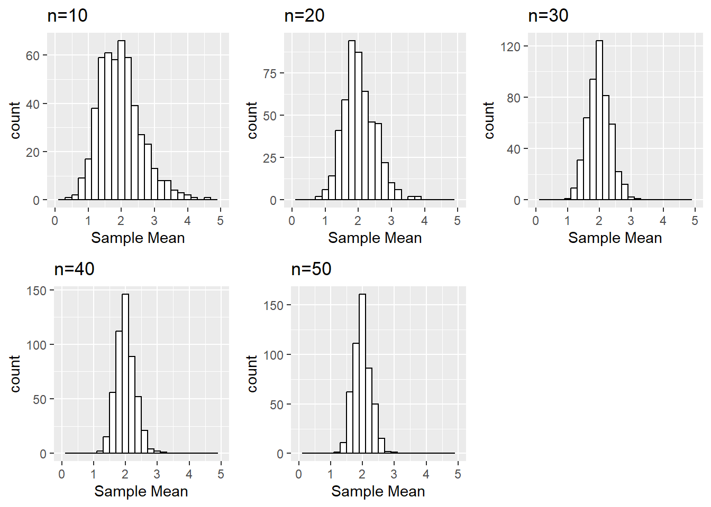

Code
plot(0:15, dpois(0:15, lambda=3.5), type='h', ylab='Probability', xlab='Number of Occurrences', main="Poisson PMF")
This page includes the solutions to the optional practice problems for the given week. If you want to see a version without solutions please click here. Data sets, if needed, are provided on the BIOS 6618 Canvas page for students registered for the course.
Homework 1, Exercise 3, involves examining the properties of estimators by their bias, consistency, and efficiency for normally distributed data for the median. For this exercise we will evaluate some of the same questions for the Poisson distribution with \(\lambda=3.5\):
plot(0:15, dpois(0:15, lambda=3.5), type='h', ylab='Probability', xlab='Number of Occurrences', main="Poisson PMF")
Using loops, simulate data from a Poisson distribution with the same size increasing from 100 to 100,000, by 100 person increments. For each sample size calculate the sample mean and variance. Plot the results.
NULL objects, looping through an index, and concatenationset.seed(515) #for reproducibility
ns <- seq(from=100, to=100000, by=100) #increasing sample size for vector
# Initialize two objects to store mean and variance results in
mean_res <- NULL
var_res <- NULL
for( i in 1:length(ns) ){
# simulate the data
dat_sim <- rpois( n=ns[i], lambda=3.5 )
# calculate the bias for the mean and variance
mean_bias <- mean(dat_sim) - 3.5
var_bias <- var(dat_sim) - 3.5
# concatenate the results
mean_res <- c(mean_res, mean_bias)
var_res <- c(var_res, var_bias)
}
# Create plots
plot( x=ns, y=mean_res, xlab='Sample Size', ylab='Bias', main='Bias for Poisson Mean', type='l')
plot( x=ns, y=var_res, xlab='Sample Size', ylab='Bias', main='Bias for Poisson Variance', type='l')
While the lab focused on vectors, if you wanted to try and leverage the fact we are calculating two different biases you may want to store the results in one object (where we can also name the rows with the sample sizes, and the columns as “mean” or “variance”):
set.seed(515) #for reproducibility
ns <- seq(from=100, to=100000, by=100) #increasing sample size for vector
# Initialize matrix
mat_res <- matrix( nrow=length(ns), ncol=2, dimnames = list( ns, c('mean','variance') ) ) #note: the dimnames argument allows us to name the rows, columns (in that order)
for( j in ns ){
# simulate the data
dat_sim <- rpois( n=j, lambda=3.5 )
# calculate the bias for the mean and variance
mean_bias <- mean(dat_sim) - 3.5
var_bias <- var(dat_sim) - 3.5
# concatenate the results
mat_res[paste0(j),'mean'] <- mean_bias
mat_res[paste0(j),'variance'] <- var_bias
}
# Create plots
plot( x=rownames(mat_res), y=mat_res[,'mean'], xlab='Sample Size', ylab='Bias', main='Bias for Poisson Mean', type='l')plot( x=rownames(mat_res), y=mat_res[,'variance'], xlab='Sample Size', ylab='Bias', main='Bias for Poisson Variance', type='l')
Admittedly, it may have been even better to add a column to the matrix for the sample size instead of calling rownames(mat_res) for the plots, but this again illustrates how many ways we can arrive at the same result.
Reproducibly simulate a sample of 10,000 from each of the following distributions
?dnbinom)Solution:
set.seed(8675309)
n <- 10000
negbin <- rnbinom(n=n, size=5, prob=0.6)
weibull <- rweibull(n=n, shape=4, scale=2)Note that many distributions have different parameterizations (i.e., ways of writing out the probability mass/density functions and specifying their parameters). Additionally, the arguments in the function may not always match what you think (e.g., the negative binomial has both n and size, where n is the number of simulated experiments and size is the target number of successful trials with the generated random data representing the observed number of total trials in each of your n experiments until you achieve size).
These two distributions aren’t ones we will necessarily work with a lot in BIOS 6611, but it can be helpful to have a brief summary:
Determine the theoretical mean and standard deviation for each distribution and verify that the generated numbers have approximately the correct mean and standard deviation. Note, you can derive or look-up and cite your source for the theoretical mean and standard deviation.
Solution:
# Mean and SD for negative binomial
mean(negbin)
sd(negbin)
# Mean and SD for Weibull
mean(weibull)
sd(weibull)The theoretical mean for the negative binomial is \(E(X) = \frac{r(1-p)}{p} = \frac{5(1-0.6)}{0.6} = 3.33\). The standard deviation is \(SD(X) = \sqrt{Var(X)} = \sqrt{\frac{r(1-p)}{p^2}} = \sqrt{\frac{5(1-0.6)}{0.6^2}} = \sqrt{5.55} = 2.36\). These equations were pulled directly from the R Documentation (?rnbinom).
The theoretical mean for the Weibull is \(E(X) = \lambda \Gamma\left(1+\frac{1}{k}\right) = 2 \Gamma\left(1 + \frac{1}{4} \right) = 1.81\), where \(\Gamma(x)\) represents the gamma function:
\[ \Gamma(x) = \int_{0}^{\infty} t^{x-1} \exp(-t) dt. \]
The standard deviation is
\[\begin{align*} SD(X) =& \sqrt{Var(X)} \\ =& \sqrt{\lambda^2 \left[ \Gamma\left(1+\frac{2}{k}\right) - \left\{ \Gamma\left(1 + \frac{1}{k} \right) \right\}^2 \right]} \\ =& \sqrt{2^2 \left[ \Gamma\left(1 + \frac{2}{4} \right) - \left\{ \Gamma\left(1 + \frac{1}{4} \right) \right\}^2 \right]} \\ =& \sqrt{0.2586} \\ =& 0.51 \end{align*}\]
These equations for \(E(X)\) and \(SD(X)\) were also pulled from the R Documentation (?rweibull), but also match the Wikipedia parameterization. A table summarizing our results shows that the estimated mean and SD from the simulated data sets closely matches the true theoretical mean and SD for each distribution.
| Distribution | Theoretical Mean | Theoretical SD | Simulation Mean | Simulation SD |
|---|---|---|---|---|
| Negative Binomial | 3.33 | 2.36 | 3.349 | 2.37 |
| Weibull | 1.81 | 0.51 | 1.818 | 0.506 |
Create a histogram and boxplot depicting each of the mock samples.
Solution:
Using the graphics in base R we can create a panel figure to show all 4 plots. There are a variety of functions and packages to do this, but we will use the par(mfrow=c(2,2)) function to specify an overall figure with 2 rows and 2 columns to plot subfigures within:
par(mfrow=c(2,2))
hist(negbin, main='Histogram of negbin')
hist(weibull, main='Histogram of weibull')
boxplot(negbin, main='Boxplot of negbin')
boxplot(weibull, main='Boxplot of weibull')
We could also do the same using ggplot2:
library(ggplot2)
library(patchwork) # for the panel figure
p1 <- ggplot() + aes(negbin) + geom_histogram(binwidth=1, color='black', fill='white') + ggtitle('Histogram of negbin')
p2 <- ggplot() + aes(weibull) + geom_histogram(binwidth=0.2, color='black', fill='white') + ggtitle('Histogram of weibull')
p3 <- ggplot() + aes(negbin) + geom_boxplot() + ggtitle('Boxplot of negbin')
p4 <- ggplot() + aes(weibull) + geom_boxplot() + ggtitle('Boxplot of weibull')
p1 + p2 + p3 + p4
Assume we are interested in an outcome that has a chi-squared distribution with 2 degrees of freedom (i.e., \(df=2\)). Generate and save a vector with 500 sample means (i.e., the mean of five-hundred simulated “experiments”), where each sample mean is from a sample size of 10 simulated from rchisq() in R.
Repeat for sample sizes of n = 20, n = 30, n = 40, and n = 50. It may be helpful to use a for loop or apply statement to tackle parts a and b simultaneously.
Solution for 2a/2b:
Let’s start by seeing an example of what this might look like with a for loop:
set.seed(6611) # set seed for reproducibility
nsim <- 500
sizeVec <- c(10,20,30,40,50)
meanMatrix <- matrix(NA, nrow = 500, ncol = 5) # create matrix to save the results, with each row representing a simulated data set and each column representing a different sample size
colnames(meanMatrix) <- sizeVec # name columns with the sample size for use in later summaries
for(j in 1:5){
for(i in 1:nsim){
chisqData <- rchisq(n=sizeVec[j], df=2)
meanMatrix[i,j] <- mean(chisqData) # save the i-th out of nsim simulations in the i-th row and in the j-th column for its corresponding sample size
}
}
head(meanMatrix) 10 20 30 40 50
[1,] 1.216040 2.327663 1.653050 1.787541 2.144370
[2,] 2.341209 1.624362 1.814585 2.141050 2.024248
[3,] 2.449218 1.499997 2.162688 2.297704 1.866892
[4,] 2.852377 1.551701 1.786574 3.001661 1.903967
[5,] 2.653542 2.332737 1.921918 2.001974 2.022062
[6,] 2.000464 1.662547 2.120618 2.455170 1.600771We could also implement this using sapply by creating a function to generate the 500 simulated means:
set.seed(6611) # set seed for reproducibility
nsim <- 500
sizeVec <- c(10,20,30,40,50)
chisq_sim_mean <- function(nsim, n, df=2){
## Writing a short function to simulate chi-squared data to calculate the mean for
# nsim: number of simulations to run and return mean for
# n: sample size to generate
# df: degrees of freedom for the chi-squared distribution, default is 2
sim_dat <- matrix(rchisq(n=n*nsim, df=df), ncol=nsim, byrow=FALSE) # simulate all observations and save in nsim columns to calculate the mean for, we specify byrow=FALSE so it will match our for loop approach above
colMeans(sim_dat) # if we don't specify something to return, the last object is generally used by default
}
meanMatrix_sapply <- sapply(sizeVec, function(x) chisq_sim_mean(nsim=nsim, n=x))
head(meanMatrix_sapply) [,1] [,2] [,3] [,4] [,5]
[1,] 1.216040 2.327663 1.653050 1.787541 2.144370
[2,] 2.341209 1.624362 1.814585 2.141050 2.024248
[3,] 2.449218 1.499997 2.162688 2.297704 1.866892
[4,] 2.852377 1.551701 1.786574 3.001661 1.903967
[5,] 2.653542 2.332737 1.921918 2.001974 2.022062
[6,] 2.000464 1.662547 2.120618 2.455170 1.600771Calculate the mean and standard deviation associated with each of the five sets of \(\bar{x}\) values.
Solution:
Since we saved our results as a matrix above, we can easily use some of the optimized functions for applying functions to matrices. For example, the matrixStats package includes lots of options, but some are already included in base R (e.g., colMeans is included but colSds is not for calculating the mean and SD, respectively, for each column in a matrix).
library(matrixStats)
Attaching package: 'matrixStats'The following object is masked from 'package:dplyr':
countcolMeans(meanMatrix) 10 20 30 40 50
1.973315 2.028235 1.987795 2.003727 1.987145 colSds(meanMatrix) # we need to load the matrixStats package for this calculation, notice how it doesn't carry the column names through for each sample size 10 20 30 40 50
0.6561354 0.4748230 0.3465965 0.3019478 0.2693243 It is also possible to calculate the mean and SD by using the apply function:
apply(meanMatrix,2,mean) 10 20 30 40 50
1.973315 2.028235 1.987795 2.003727 1.987145 apply(meanMatrix,2,sd) 10 20 30 40 50
0.6561354 0.4748230 0.3465965 0.3019478 0.2693243 Create histograms of the sampling distribution of the mean, for each sample size n. Provide meaningful labeling (i.e., include a title and label the relevant axes).
Solution:
For this example we’ll start with using base R graphics:
par( mfrow=c(2,3) )
invisible(
sapply(1:5, function(x) hist(meanMatrix[,x], xlim=c(0,5), breaks=seq(-0.1,5.1,by=0.2), xlab='Sample Mean', main=paste0('n=',sizeVec[x]) ) )
) #invisible() suppresses the hist() function output to just provide the plots
We can do something similar with ggplot2 leveraged by creating a function and using lapply based on inspiration from various stack overflow posts:
library(ggplot2)
library(Rmisc) # to use multiplot function
histogram_data_column <- function(matrix, column_num, column_label){
## Transform the columns of a data frame into histograms
# matrix: matrix to plot object from
# column_num: column number to plot
# column_label: label for the given column
ggplot() + aes(matrix[,column_num]) +
geom_histogram(binwidth=0.2, color='black', fill='white') +
ggtitle(paste0('n=',column_label)) +
xlab('Sample Mean') + xlim(0,5)
}
ggplot_histograms <- lapply(1:5, function(x) histogram_data_column(column_num=x, matrix = meanMatrix, column_label=sizeVec[x]))
multiplot(plotlist = ggplot_histograms, layout=matrix(c(1,2,3,4,5,NA), nrow=2, byrow=T))
Is there a value of the sample size n (i.e., 10, 20, 30, 40, or 50) where the distributions begin to look normal?
Solution:
This is somewhat subjective since each person may find different outliers or points they find concerning. For example, at \(n=30\) is seems that our distribution is fairly normal. But one could claim \(n=20\) looks normal “enough” or even that the slight right skew even at \(n=50\) is concerning enough that perhaps a larger sample size is needed.